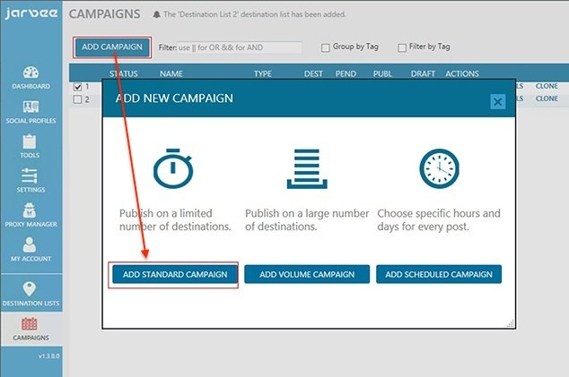
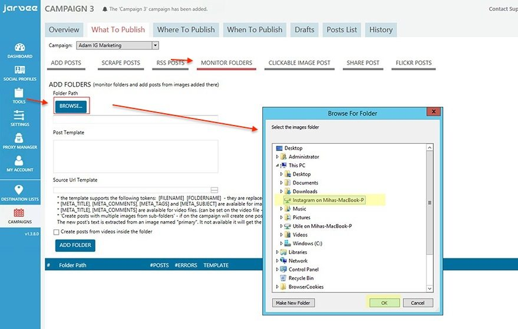
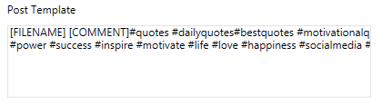
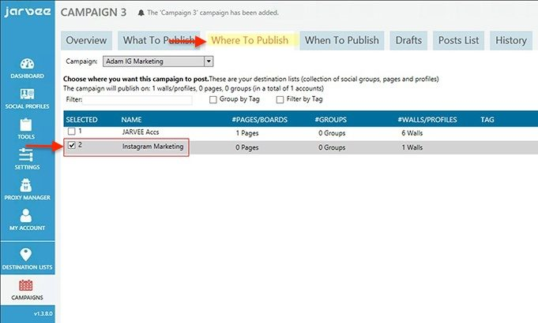
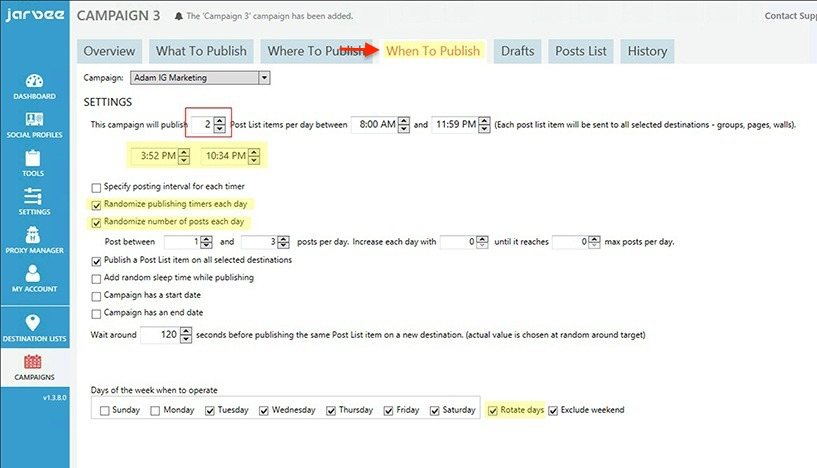
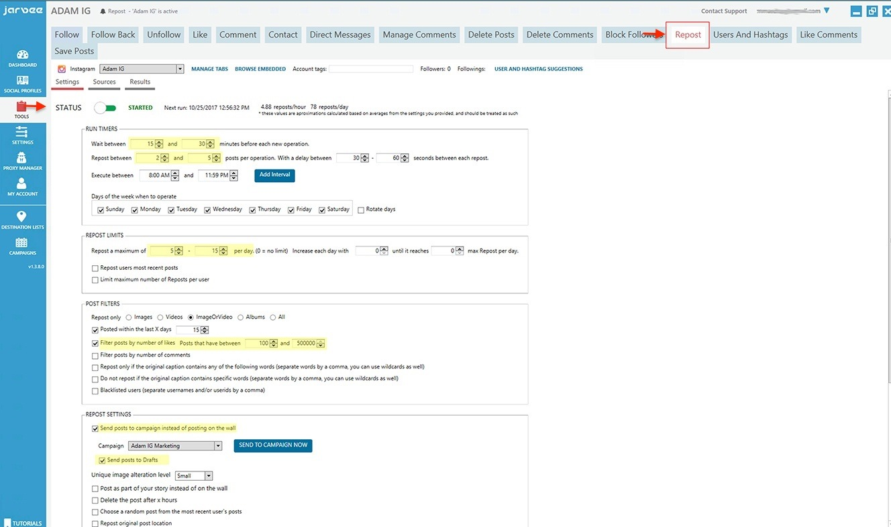
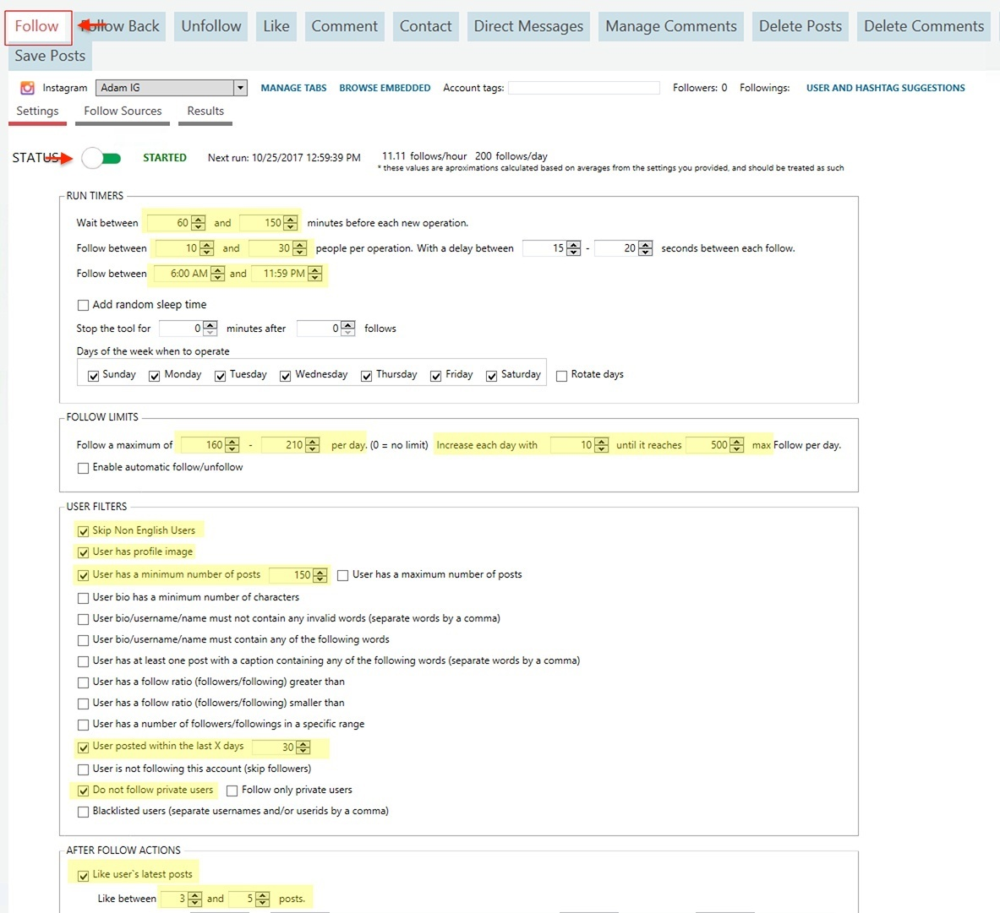
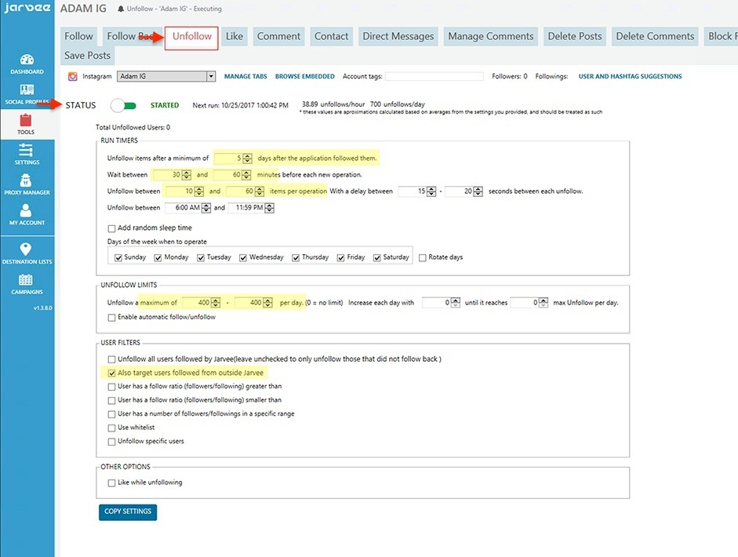
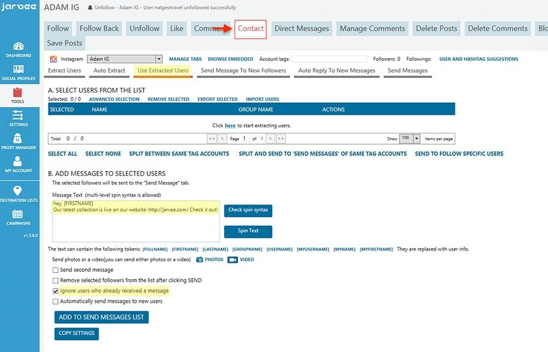

According to the latest reports, 50% of Instagram users follow at least one business account. Not only that, but 60% of users say they learned about a new product or service on Instagram.
Instagram reached the 700 million monthly active users milestone this year, and their growth rate is speeding up. Instagram Stories, which helped boost this growth, eclipsed Snapchat in daily active users and is still growing. There will be no surprise when Instagram reaches 1 billion monthly active users mark.
These are impressive numbers that should make even the most skeptical of marketers thinking of adding Instagram to their marketing mix. This social platform can be your opportunity to get creative and represent your brand with visual storytelling and attract an entirely new market.
Long story short: If you are not on Instagram, you should be.
Let’s see how to start Instagram Marketing without having to stay up all night, every single day in order to build up your profile.
This tutorial will help you get started with Instagram automation – the smart way. You will learn how to get faster and better results in less time. By adding these strategies and tools to your marketing, you will start with a significant competitive advantage over your peers.
Create Content That Customers Will Love
Even if your business is not revolved around crafty pictures, you can still get creative and create content that will attract your potential customers. For example, you can have a mix of business advice and motivational quotes that resonate with your followers. Your job is to figure out what your customers would like to see, and then you can use JARVEE to do the rest, from scheduling your content and posting it at the perfect times to finding potential customers.
One way to find out what your customers would love to see on Instagram is to do a competitive research and see what other businesses in your niche are posting.
Once you know what content to create for your audience, you can start … well… creating it. 🙂 This might sound like a lot of work (and headaches), but actually, it can be quite easy these days with the abundance of online tools for crafting visual content. I like to use Canva for all my designs because it offers me access to over a million of high-quality images and hundreds of easy-to-use templates to choose from. No need for expensive designers. Here is a simple tutorial on how to use Canva to create amazing content for your Instagram marketing in the less amount of time possible.
Use JARVEE To Automate Your Instagram Marketing
On Instagram, you can start off by posting twice per day, and even more if you can keep up with creating the content. The good news is that if you set up JARVEE as we are about to show you, your only concern will be to create the content that will be added to your campaign.
The most time-saving JARVEE trick that you can use for Instagram Marketing (and all the other social networks where you want to post images) is that you can add a folder where you keep your images and JARVEE will automatically extract the pictures and share them at the specified intervals. Every new photo added to this folder will be automatically extracted and added to your scheduled campaign. That’s pretty neat, right?
All you have to do is to create your campaign, set up your images folder and then keep adding your creations to the folder. The best part is that you can use a Dropbox folder, that will synchronize your photos on multiple devices. You can add photos from your phone, your laptop, your tablet, all to the same folder. You can even share the folder with the rest of your team members, and have them all contribute.
So, let’s start with creating the JARVEE campaign for your Instagram Marketing.
Schedule All Your Instagram Posting With JARVEE
Before creating a scheduling campaign for your Instagram Marketing, we need to create a destination list where we will add all your social accounts where you want to post your visual content to. This is very helpful in case you want to share the same images to other accounts, either Instagram or Pinterest, Twitter, even Facebook accounts.
To create a destination list you need to:
- Go to Destination List tab
- Click on Add New Destination List
- Give your destination a descriptive name
- Add your Instagram account

You can add your Twitter account too, or Pinterest boards, even other social networks if you want. But for this tutorial, we will focus on Instagram.
Now let’s see, step-by-step, how to create your first campaign to schedule your Instagram posting.
- Step 1 – Create a Standard Campaign
The standard campaign is the best option for your Instagram Marketing because you can choose how many posts you want to have per day and JARVEE will set up optimized timers for you. No need to worry about the exact hour and minute for your post, it’s enough to set up a time interval and the number of posts per day.

- Step 2 – Add your visual content
This is where the fun part begins. Like I said before, you can set up a Monitoring folder where you will add your Instagram pictures, and JARVEE will extract them and add them to your campaign to be posted at the right time for your audience.
-
Go to What To Publish and click on MONITOR FOLDERS.
Click on the Browse button to add the folder where you want to add your photos.

Define a template for your future posts. Now, this is important because you want to make the most of your posts while automating this process as efficient as possible.

When defining your template, you can use tokens like [FILENAME] – which means that JARVEE will replace this token with the picture’s file name, making easier for you to customize all your posts. So make sure to save your files with the caption you want to add to your photos.
Another interesting token you can use is [COMMENT] – everything after this token will be posted as the first comment to your photo. This is very helpful if you want to use hashtags to help people discover your photos. Instagram lets you add up to 30 hashtags to your photos, but if you add them all into the caption not only that your post will look spammy, but people will be distracted from the message you want to transmit. If you add all your hashtags into the first comment, then your posts will look clean, and your photos will still be discoverable by Instagrammers.
So the best strategy here is to research your hashtags, find the most relevant ones for your content, and the most popular ones in your niche and add them to your template.
In the end, your template should look like this:

-
But remember to save your photos with the caption you want to use as the filename.
After you finished crafting your template click on ADD FOLDER.
Of course, you can add as many folders you want with different templates. You can have your “quotes” folder, “business advice” folder, “behind the scenes photos” folder and so on. Each with different hashtags.
To start extracting photos from your folders, you need to click on the START action next to the folders you want to use. JARVEE will then retrieve the existing pictures and add them to the Posts List. Each time a new picture will be added to the folder, JARVEE will add it to the Posts List.
You can also choose to send all the photos to Drafts, in case you want to sort them out before sending to the Post lists. In this case, you will need to check the Drafts tab weekly (or every once in a while) to make sure your campaign has enough posts in the Post List.
- Step 3 – Choose your destination list

Go to Where To Publish and select the destination list you created above for your Instagram accounts.
- Step 4 – Set up timers for your Instagram posts
Go to When To Publish and choose the number of posts you want to have per day. You can start with 2 or 3 posts per day, and increase this number over time.
I usually choose to “Randomize publishing timers each day”, “Randomize the number of posts each day” and “Rotate days” to make it look more natural.

- Step 5 – Review your posts and then start the campaign
To review your posts and make sure your template is working ok, go to the Posts List tab.If everything is ok, you can go to the Overview tab and start your campaign. Make sure to give your campaign a descriptive name before starting it, so you can easily recognize it.

That’s it: you now have in place an entirely automated system that will take your photos from your folders and post them to your Instagram with customized captions and hashtags.
Add more content to your profile with the Repost tool
Here’s a great method that can help you strike two birds with one stone: search for great content on Instagram from Instagrammers in your niche with similar numbers of followers or slightly higher, and repost their content to your profile.
First, you will have great content to keep your audience engaged. And second, this is considered a “shout-out” in Instagram communities, which means that a good deal of the people you shout-out will return the favor and repost some of your content to their feeds. This will help you reach a new audience and grow your accounts faster.
With JARVEE’s Repost tool you can do this on autopilot:
#1 Set Up The Tool’s Settings
- go to the Tools section in JARVEE and choose the Instagram account you want to grow using this method
- click on the Repost tab
- choose the Settings for reposting content on Instagram:
- choose the number of minutes to wait between each repost operation, how many reposts you want to have per operation and the time to wait between each repost
- I suggest to start with a maximum of 2 to 5 reposts per day and slowly increase the number
- After you select the hours for your repost and the post type: images or videos, you can choose to delete the repost after several hours. This is a limited time shout-out, and it practiced a lot with excellent results. To be more efficient with this method you should notify the people you are reposting about your shout-out and the interval you’re doing it, so they’ll know to return the favor.
- next, make sure that the post you want to share is recent enough (I usually choose posts within the last 15 days)
- you might want to share only those posts that already have some likes or comments
- you can also set up a list of keywords to exclude posts containing them
- Finaly add your template for the post’s caption. You can use spin syntax and tokens such as: [USERNAME], [POSTURL] or [ORIGINALPOST CAPTION] that will be replaced with the corresponding info at the time of posting. Or you can use the [COMMENT] token, just like for your own posts, and add hashtags in the first comment. You can use as template something like this: {Reposted from [POSTURL]|Posted by @[USERNAME]} but it would be best if you create a more complex spin text for this.

#2 Choose The Sources
After you figure out all your settings, you need to go to the Source sub-tab to choose a method to search for posts to share.
These are the methods you can use to find posts:
- add a list of keywords and repost based on these keywords
- add a list of accounts (just add valid usernames, one per line) and repost from their content. This is very useful if you know the influencers you want to reach
- repost from the followers or followings of certain Instagram accounts. This is useful if you want to target friends of competitive accounts in your niche.
- you can simply choose to repost popular post
- or repost based on certain locations
- or you can even target specific posts, if you add their URL one by one
Get more Instagram followers using the JARVEE Tools
The reciprocity principle states that people use to return other people the favor. So, applied to social media this means that if you follow other people, the chances are that they will follow you back (at least most of them). Same goes for likes or comments.
So a good strategy to grow your accounts fast is to search for people in your industry and follow them. A very good percentage of them will follow you back. After a few days, you can unfollow those that didn’t follow you back. Rinse and repeat. You can do this manually, but it will take you a lot of time. So the best way is to use JARVEE’s tools like Follow and Unfollow.
On Instagram, there are more chances that a person will follow you back if, after following you also like their latest photos. Through our testing, we noticed that you increase your chances if you like the latest 3 – 5 photos or even better if you comment on the latest 3 to 5 photos.
Let’s see how to use the Follow tool in JARVEE to do all this:
- go to the Tools section in JARVEE and click on the Follow tab
- Click on the Settings sub-tab where you can refine your search
- Start with setting up how much time to wait between each follow operation and how many people to follow per operation. If you are just beginning you should start slow, following around 8 to 20 people per operation is more than enough.
- Now make sure you follow people with a profile picture, with a minimum number of posts and a bio. Otherwise, you will risk following inactive or spam accounts
- You can also set up a list of keywords to ignore people with these keywords in their bio or username
- Next, I usually set the tool to search for people that posted within the last 30 days (to ensure I’m not following inactive users), and I want to avoid private users.
- Now, like I said above, you can set up the Follow tool to like the latest posts after follow (I choose to like between 3 and 5 posts) and leave a comment on the last post. This will increase the chances that the user will follow you back. But, make sure you use spin syntax and get creative with the comments, so they don’t look too spammy (you know the comments I’m talking about 😉 ).
- After you figured out all the settings, you need to go to the Follow Sources tab
- Here you can select a method to search for people to follow.
You can search people by keywords, or you can target the followers or followings of specific accounts in your niche. You can even target people that follow your own followers or simply add the accounts you want to follow one by one.
Another method to search for people to follow is to target people that interact with the posts of certain accounts (for example you want people that like or comment on your posts, or to a competitor’s posts) and lastly, you can follow people based on their location.
You don’t have to use all these methods at once (although you can:P). Just start with the one you feel more comfortable with and you can test other methods later.
- After you have the settings and the sources, you can go on and Start the Follow tool.

The Unfollow tool works hand in hand with the Follow Tool. So you might want to start this one too. You just have to set up a number of days to wait before unfollowing those people that did not follow you back. I usually wait about 5 days.

Similar to the Follow tool, there are two other tools that you can use: Like and Comment. You can search for posts in your niche and like or leave a comment. People will notice your account and check it out. These tools are pretty similar to the Follow tool, but if you need more guidance, you can check out our video tutorials.
Let your clients be the first to know about your offers with the Contact tool
Even with your carefully planned Marketing strategy in place, most of your followers might miss a good deal of your content. But they followed you because they want to be the first to know when you release something new, or you have a giveaway, contest or a promotional offer. You can make sure they still get your offers even if they are not 24/7 on Instagram, by using the Contact tool and send them Direct Messages. This way, they will get notifications and any promotional material right in their inbox.
To use the Contact Tool, you need to go to the usual place in the Tools section, click on the Instagram account you want to use to contact its followers and click on the Contact tab.
Here you can notice other sub-tabs: Extract Users, Auto-Extract, Use Extracted Users, Send Message To New Followers, Auto-Reply To New Messages and Send Messages.
In the first sub-tab, you just need to click on the EXTRACT USERS button and JARVEE will start retrieving the followers of the accounts you enter in the text field. If you want to automatically extract new followers to the targeted accounts, you need to use the second sub-tab: Auto-Extract. Here, you need to add the targeted accounts in the text field (like for the first sub-tab) and then click on the “Start” button. You can customize when to run this tool or how many users to extract on each run.
After the first part of this process is done, the extraction of the followers, you need to go to the Use Extracted Users tab. Here, you will see the list of all your followers. You need to select the ones that you want to contact.
Then, in the same tab, in the ADD MESSAGES TO SELECTED USERS area, add the message you wish to send. You can use spin syntax for this if you want to change things up a bit. You can also use token such as [FULLNAME], [FIRSTNAME] or [LASTNAME] if you want to customize your message. These token will be replaced with the corresponding information.

After finishing your message click on the ADD TO SEND MESSAGES LIST button to send it to the messages list that you will manage in the next step. Don’t worry; this will not send your message to your followers. We will do this in the next step.
Now, the final step: click on the Send Messages tab. Here you will see the messages you plan to send and the delays for your messages. It’s best to have some delays in place, to avoid sending too many messages in a short period of time. The default settings are a great starting point.
When ready you can click on the Start button.
That’s it; you now know how to promote your business on Instagram like a Pro. Of course, we have more incredible tools like this, if you want to check them out, you can watch our video tutorials.
Liz Dean says
OK. I must admit. This tool is simply AMAZING. I grew my Insta from 11 000 to 17 000 in a month. A-M-A-Z-I-N-G!!! Thank you!
Adam says
Thank you, we really like it when our tool is appreciated 😀
Jon says
Can you share your setting?
I’m not getting that much success.
Kevin says
Seriously?
Ashley says
I am having trouble with the account.
Jacobie says
Almost my 3rd month now and aside from a few bumps here and there, I’d say this is by far the best tool I’ve played with. It’s not too simple yet not that complicated once you get that hang of it.
Adam says
Thank you Jacobie, appreciate the nice review!
Lucy says
Allow me to quote you on this one:
“These are impressive numbers that should make even the most skeptical of marketers thinking of adding Instagram to their marketing mix.”
What you said above is very true, I started using Instagram 3 months ago and I couldn’t be happier with the sales I’m getting.
Adam says
Glad to hear that, keep it up and those number will grow more and more
Saim says
I’m not even using all tools for Instagram that helps with growth and I have great results after two month 😀 Can’t wait to include Contact tool and some other this month.
Thank you guys for making such an awesome tool!
Adam says
Glad to hear that!
John says
wow! the Monitor Folder function is very powerful, where can I get Jarvee please?
Adam says
It really is, and it simplifies your work a lot! Just use the top menu to get a 5 days free trial of Jarvee.
Kicko says
I’m not going to lie, I was a bit overwhelmed with all the different settings and options when I first opened the program, but after going through it and looking at a help document it’s starting to become more common to me. Great tool. I’m only using the instagram part right now, just to think it supports so many other platforms. Would be nice to see a YouTube commenter in it, and/originally other youtube options as well. Needless to say, awesome tool.. great job guys.
Adam says
Thanks for the nice words Kicko, as for youtube, we’ve got that covered as well, check it out!
James says
I use a macbook pro and have to access jarvee from my virtual cloud server. My issue is sourcing my instagram photos to be automated. Essentially how do I have Jarvee access my photos from my macbook folder if I’m using a virtual server for Jarvee? Please help!
Adam says
You can use dropbox to share a folder on your computer and have access to it on your VPS. After that you go to Jarvee and use the monitor folder option to pick up images from that folder and use as posts. Once you add images to the folder on your computer they will also be addded to the VPS and Jarvee will automatically pick them up.
Mikael Saiband says
On your screen, is it normal that one is 200 follows a day and 700 unfollows a day, it is not very logical
Adam says
That’s because I’ve used it just for follows for a period of time and I’m trying to get rid of those follows 🙂 If you don’t do that, those numbers should match, yes
Adni says
Why not 🙂 With proper settings, sources and nice profile, Jarvee will surely help you get more attention, therefore, more followers and higher engagement.
Simone says
How can I tell Jarvee in which order to publish the photos that are inside a monitor folder? I know I could rename my images with numbers and use the “1,2,…n[META_TITLE]” token but I don’t want to rename my images like that since I am using the “[FILENAME]” token and I don’t want my post to include “1,2,…n”, in front of the caption. Thanks! 🙂
Cassie says
I like the idea of this tool, but haven’t been able to fully enjoy it just yet. I thought I had it set up the way it was supposed to, and my campaigns would say they published the photos, but then if I looked at the instagram accounts, nothing was actually published? I can’t seem to figure out what I can do to fix this and it’s really saddening because as far as I could tell, I was following steps correctly. I don’t know where I went wrong in my settings causing it to not post the post but tell me that it did.
Adam says
Please contact support with screenshots of your settings and they will help you out!
Wilbert says
Dear Adam,
Im currently Reading everything I can before I start using Jarvee like a boss! Only question I have is if you could recommend me a good private proxy provider and what type of proxies (residential/mobile) to use with Jarvee?, Thank you very much and looking forward to heard back from you as that is the only thing that I need to know before getting started!
Thank you very much!
Bruce says
hi Wilbert,
I can’t recommend you any specific provider, but I can recommend type of proxies: mobile.
Residential proxies might work well too. Avoid using datacenter proxies, doesn’t matter if they are private or shared.
Regards
catia says
Hi, I downloaded the jarvee in my windows notebook, but I can not open it. Can you help me?
Bruce says
What Windows version do you use? You should have version NET Frameworkd 4.6 or higher in order to run Jarvee. Please contact support, we’ll sort it out.
caolin says
Hello, it would be perfect if there is a Chinese version, because I come from China and my English is not very good.